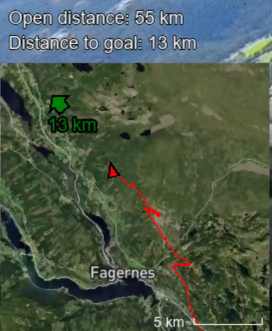
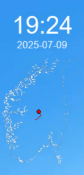
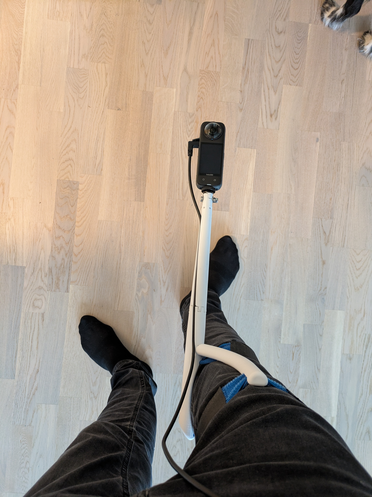
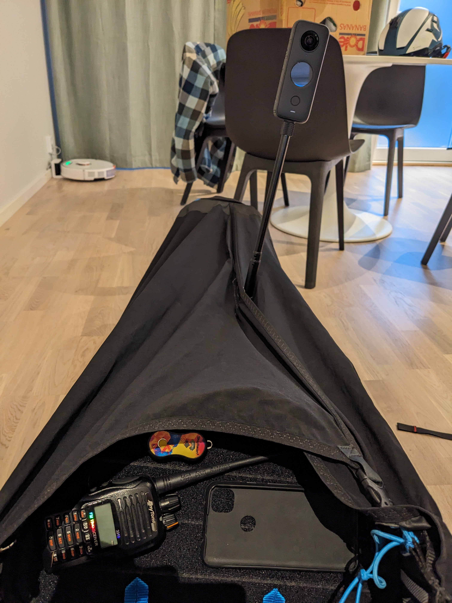

Tracklog Animator
I coded a program that takes a paragliding tracklog with gps coordinates, and turns it into an animation. That video can then be overlaid on recorded video to show live-location and altitude.
The animation visualizes data that helps the viewer keep oriented; like position, path flown, current direction, distance flown and distance to goal:
It also shows altitude. On this screenshot 900 is the ground elevation above sea level, 1770 m is the pilots altitude above sea level, and 2 m/s tells us the pilot is in a vertical wind, causing him to rise upwards at 2 m/s instead of decending.

Lastly it shows a country map to give geographical context, plus date and time.
The footage was shot with a 360-degree camera mounted on my leg with a 3D-printed camera mount.
Approximate setup when flying:
Everything in this project was done by me; coding, 3D-printing, and I flew the paraglider.